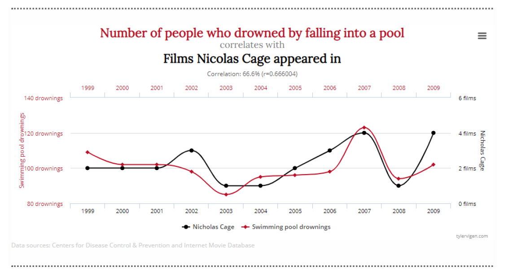
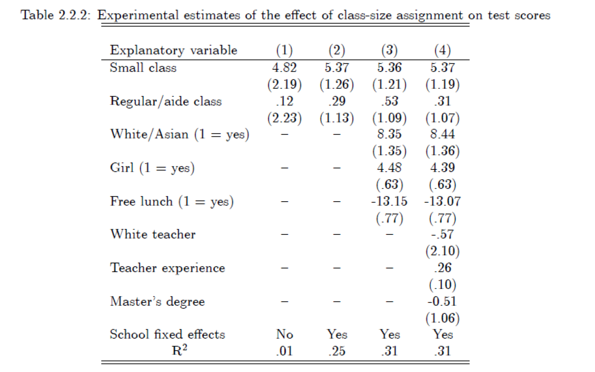

Sesión 1: Métodos de Evaluación Causal y RCT
Resultados Potenciales, Sesgo de Selección y Experimentos
1 Introducción [EN CONSTRUCCIÓN]
Esta sesión introduce el problema fundamental de la inferencia causal y establece el marco teórico de los Resultados Potenciales (Rubin Causal Model). Se parte discutiendo por qué la correlación no implica causalidad, sobre el sesgo de selección y cómo los experimentos aleatorios (RCT) resuelven el problema del sesgo de selección.
2 Bloque 1: Causalidad y Validez del análisis empírico
Hay muchas decisiones en economía, política, negocios, etc., que implican la comprensión correcta de la relación entre las variables implicadas. Por ejemplo, muchas veces vamos a querer testear hipótesis: ¿Existe la discriminación racial en la asignación de créditos hipotecarios? ¿En la decisión de usar la herramienta de la prisión preventiva? ¿Son iguales los salarios entre hombres y mujeres con el mismo nivel de educación y experiencia laboral? Por otro lado, también muchas veces vamos a querer cuantificar efectos (relación causal): ¿cuánto aumenta el desempeño académico de los estudiantes al reducir el tamaño de la clase? ¿Cuál es el efecto del aumento del salario mínimo en el desempleo?
Todas estas respuestas requieren una respuesta numérica y una medida de precisión que acompañe dicha respuesta, para saber el grado de error conocido. No obstante, también requiere la comprensión correcta del tipo de relación que une a las variables, i.e., distinguir la naturaleza de la relación entre \(X\) e \(Y\).
En líneas generales, o al menos para este curso, nos va interesar la relaciones causales entre variables. Es decir, una relación que establezca la naturaleza del vínculo de nuestras variables tal que: \[ X \implies Y \] Para ello, es muy importante distinguir entre relaciones causales y correlaciones. Sobre todo, porque, observacionalmente las relaciones de correllación pueden verse iguales a las de causalidad. No obstante, correlación no implica causalidad
2.1 Causalidad vs. Correlación
Como ya vimos, muchas relaciones entre variables pueden confundirse, sobre todo las correlaciones con las relaciones causales. Una forma típica es lo que se conoce como correlación espúrea. El caracter espurio de una correlación está dado por la alta asociación (o generalmente por la alta) entre variables y que, en virtud de ella, se interprete una relación de necesidad, o peor, de causalidad.
Un ejemplo clásico de correlación espuria:
Ejemplo: Nicolas Cage y Ahogamientos Existe una correlación del 66% entre las películas de Nicolas Cage y la gente que se ahoga en piscinas. No obstante, sabemos que Nicolás Cage y sus películas no causan que más personas se ahoguen. Esto ilustra que \(Corr(X,Y) \neq 0\) no implica causalidad, por más fuerte que sea el grado de asociación.
Confundir una correlación (y peor aún: una espúrea) con una relación causal, puede llevar a errores graves. Por ejemplo, en Mostly Harmless Econometrics (Angrist y Pischke, 2008) se muestra cómo hay una relación entre ir (o no) al hospital y el grado de “salud subjetiva”1 reportado. Los datos son los siguientes:
| Grupo | N | Salud Promedio (1=Excelente, 5=Muy Mal) | Error Est. |
|---|---|---|---|
| Hospital | 7,774 | 2.79 | 0.014 |
| No Hospital | 90,049 | 2.07 | 0.003 |
| Note: | |||
| Fuente: Angrist & Pischke (2008). Diferencia de medias: 0.71 (t=58.9). |
Como se puede observar, la salud promedio de las personas que no asisten al hospital reportan que, en promedio, tienen un estado de salud mejor a los que asisten (\(2{,}79 > 2{,}07\)), pues el promedio de los que no asisten al hospital es más cercano al 1 (“Excelente salud”) que los que sí asisten. Pero, ¿esto significa que asistir al hospital empeora la salud? Suena ridículo dicho así (o quizás no), pero lo cierto es que este tipo de relaciones se suelen establecer.
| Grupo | N | Salud Promedio (1=Muy Mal, 7=Muy Bien) | Error Est. |
|---|---|---|---|
| Hospital | 4,849 | 4.23 | 0.022 |
| No Hospital | 40,816 | 4.93 | 0.007 |
| Note: | |||
| Fuente: Elaboración propia con CASEN 2015. Diferencia de medias: 0.70 (t=33.1). |
2.2 El problema del Sesgo de Selección
Comparar grupos observacionales suele llevar a conclusiones erróneas debido a diferencias preexistentes.
Ejemplo: Salud y Hospitales
- Datos: Las personas que van al hospital tienen peor salud (\(2.79\)) que las que no van (\(2.07\)).
- ¿Conclusión errónea?: “Ir al hospital te enferma”.
- Realidad: Hay un sesgo de selección. La gente que va al hospital ya estaba más enferma (autoselección).
2.3 Validez Interna y Externa
Para evaluar cualquier estudio empírico, analizamos dos dimensiones:
- Validez Interna: ¿El estimador del efecto causal es insesgado para la población estudiada?
- Amenazas: Variables omitidas, causalidad reversa, errores de medición.
- Validez Externa: ¿Se pueden generalizar los resultados a otras poblaciones o contextos?
- Amenazas: Diferencias institucionales, muestras no representativas (ej. voluntarios).
2.3.1 Endogeneidad
La endogeneidad ocurre cuando \(Cov(X, \epsilon) \neq 0\). Un ejemplo clásico es la Ecuación de Mincer para el retorno a la educación:
\[ \ln(y_i) = \beta_0 + \beta_1 S_i + \gamma X_i + u_i \]
Donde \(\beta_1\) suele estar sesgado hacia arriba por “habilidad” (variable omitida): la gente más hábil estudia más y gana más, sobreestimando el efecto real de la educación.

3 El Problema Fundamental de la Inferencia Causal
Definimos los Resultados Potenciales:
- \(Y_{1i}\): Resultado si individuo \(i\) recibe tratamiento (\(D_i=1\)).
- \(Y_{0i}\): Resultado si individuo \(i\) NO recibe tratamiento (\(D_i=0\)).
El efecto causal individual es \(\tau_i = Y_{1i} - Y_{0i}\). El problema es que nunca observamos ambos resultados para la misma persona simultáneamente.
3.1 Descomposición del Sesgo
La diferencia simple de medias (Naive Comparison) se descompone en:
\[ \underbrace{E[Y|D=1] - E[Y|D=0]}_{\text{Diferencia Observada}} = \underbrace{E[Y_{1} - Y_{0} | D=1]}_{\text{ATT}} + \underbrace{E[Y_{0} | D=1] - E[Y_{0} | D=0]}_{\text{Sesgo de Selección}} \]
- ATT: Efecto promedio en los tratados (Average Treatment Effect on the Treated).
- Sesgo de Selección: Diferencia en el resultado base (\(Y_0\)) entre quienes se tratan y quienes no.
4 Bloque 2: Experimentos Aleatorios (RCT)
La aleatorización garantiza que el tratamiento \(D_i\) sea independiente de los resultados potenciales (\(Y_{1i}, Y_{0i}\)).
Esto implica que: \[ E[Y_{0i} | D_i=1] = E[Y_{0i} | D_i=0] \] ¡El sesgo de selección desaparece! Por tanto, la diferencia simple de medias recupera el efecto causal verdadero (ATE).
4.1 Caso de Estudio: Proyecto STAR (Tennessee)
Experimento de los 80s para ver el efecto del tamaño de la clase en el rendimiento escolar.
- Tratamiento: Clases pequeñas (13-17 alumnos).
- Control: Clases regulares (22-25 alumnos).
4.1.1 1. Test de Balance
Antes de estimar efectos, debemos verificar que la aleatorización funcionó. Las características pre-tratamiento deben ser iguales entre grupos.

Nota: El p-valor conjunto no significativo indica que la aleatorización fue exitosa.
5 Bloque 3: Regresión e Inferencia
5.1 Estimación por MCO
En un RCT ideal, podemos estimar el efecto (\(\rho\)) con una regresión simple:
\[ Y_i = \alpha + \rho D_i + \eta_i \]
5.1.1 ¿Por qué añadir controles (\(X_i\))?
Aunque no son necesarios para evitar sesgo (dada la aleatorización), incluirlos sirve para:
- Reducir la varianza del error y ganar precisión (errores estándar más pequeños).
- Controlar por el diseño si la aleatorización fue condicional (ej. estratificada por escuela).

5.2 SUTVA (Stable Unit Treatment Value Assumption)
Asumimos que no hay interferencia entre unidades: el tratamiento de \(i\) no afecta a \(j\).
- Violaciones: Efectos pares (spillovers), efectos de equilibrio general.
5.3 Pruebas de Hipótesis
- Muestras grandes: Test-t asintótico estándar.
- Muestras pequeñas: Test Exacto de Fisher (permutaciones).
6 Referencias
- Angrist & Pischke (2009). Mostly Harmless Econometrics, Cap. 2.
- Material del curso “Econometría Aplicada I”, FEN U. Chile (2025).
Footnotes
Esto se mide con la pregunta que realiza la Encuesta Nacinoal de Salud (NHIS): “Would you say your health in general is excellent, very good, good, fair, poor?” donde 1 es “excellent health” y 5 es “poor health”↩︎